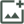

Pharmacy icon review
ANTZ Rounded draft batch: every icon in the Pharmacy module. Line and filled at 16, 24 and 48px (48px sits on a tile), next to the old mobile SVGs they replace. Icons are inlined from library/line and library/filled when this sheet was generated. Old SVGs load live from app/public/current.
| Icon | Line 16 · 24 · 48 | Filled 16 · 24 · 48 | Metaphor | Old SVG |
|---|---|---|---|---|
priority_highHigh prioritydraft |
Circle container with an up chevron. Family: critical = double chevron, medium = two bars, low = down chevron. Pair with the Warning role when selected. | |||
emergencyEmergency prioritydraft |
A flame with a second tongue: urgent / hot. Replaces the old flame-in-circle. | |||
assignment_addPharmacy requestdraft |
Clipboard (shared base) + add badge = new pharmacy request. | |||
add_photoAdd photodraft |
Picture frame (sun dot, mountain) + add badge. |  |
||
priority_lowLow prioritydraft |
Circle container with a down chevron (pair with the Success role when selected). |